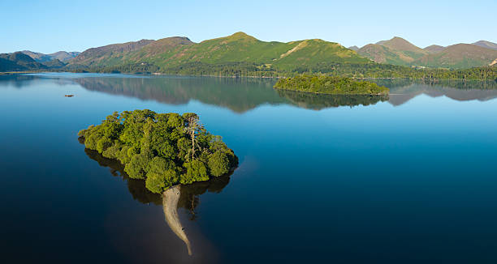

Harmonious Powers with Nature work
On sky, earth, river, lake, and sea:
Sunshine and storm, whirlwind and breeze
All in one duteous task agree.
Once did I see a slip of earth,
By throbbing waves long undermined,
Loosed from its hold; - how no one knew
But all might see it float, obedient to the wind.
Might see it, from the mossy shore
Dissevered float upon the Lake,
Float, with its crest of trees adorned
On which the warbling birds their pastime take.
Food, shelter, safety there they find
There berries ripen, flowerets bloom;
There insects live their lives - and die:
A peopled world it is; in size a tiny room.
And thus through many seasons' space
This little Island may survive
But Nature, though we mark her not,
Will take away - may cease to give.
Perchance when you are wandering forth
Upon some vacant sunny day
Without an object, hope, or fear,
Thither your eyes may turn - the Isle is passed away.
Buried beneath the glittering Lake!
Its place no longer to be found,
Yet the lost fragments shall remain,
To fertilize some other ground.